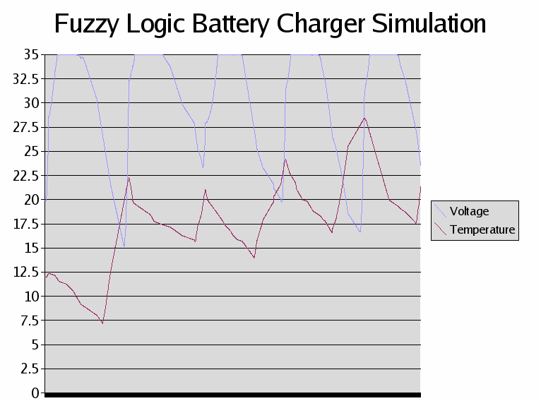

In an effort to learn more about AI programming techniques, I'm trying to port M. Tim Jones' AI Application Programming examples from C to Ruby. I'm planning to port these in no particular order.
The relevant chapters are:
- Simulated Annealing
- Adaptive Resonance Theory
- Ant Algorithms
- Neural Networks and the Backpropagation Algorithm
- Genetic Algorithms
- Artificial Life
- Expert Systems
- Fuzzy Logic
- The Bigram Model (Hidden Markov Models)
- Intelligent Agents
Tim was kind enough to pass on the book's erratum to me - current as of Oct 06 2003.
General musings
- The code in this book (so far) doesn't use setjmp() or doubly-indirect pointers or other hairy C stuff - it's mostly just loops and functions. This makes porting it a lot easier.
- Watch for C code like this:
if (foo) {
}
It needs to be translated to
if (foo != 0) {
}
in Ruby. In other words. "non zero" in C needs to be translated to "not nil and not zero" in Ruby.
- If someone wanted to do this and preserve speed, it'd probably be best to just write Ruby extensions that wrap the AI stuff (thx to Rich Kilmer for this comment)
- So far I've pretty much just ported it straight over - only adding a few objects as necessary. There's some stuff that could turn into some nice objects, i.e., the voltage membership functions in the fuzzy logic examples.
- Ruby is _so_ much less wordy than C - not having to type all the parentheses and semicolons and such is really nice.
- Writing more tests will alleviate some problems I'm having - i.e., forgetting the "@" on a instance variable. It's kind of an odd situation, though... I don't really understand how some of the algorithms work, so writing tests for them is hard since I have to step thru the entire function with sample values. I feel like the tests I'm writing are too high-level or something.
Chapter 9 - Fuzzy Logic
Updated 10/2/03: Battery charger simulation functionally complete, code is here. Below is an Open Office-generated graph showing the relationships between the battery's voltage and temperature - you can see when the fast charger kicks in and when it falls back to trickle charge mode. TODO:
- Use a Ruby library to generate charts on demand
- Write more tests
- Refactor away the redundancies in the membership function code
